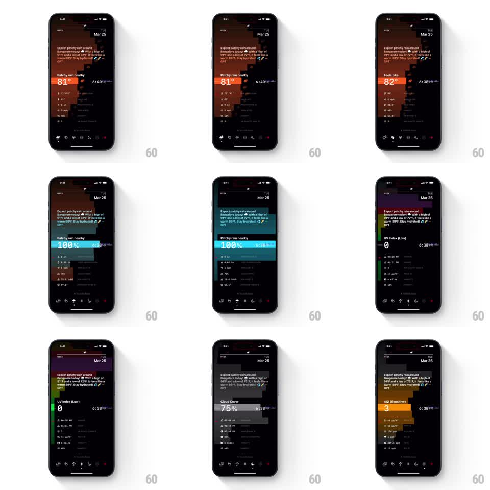

Media
Frame-by-frame

Rebuild this interaction 1:1: Lume's bottom tab metric switch - tapping a tab morphs the hero stat card's background color, value, label, and time with a spring-loaded layout shift while the pixel-art landscape tints to match.

Rebuild this interaction 1:1: Lume's bottom tab metric switch - tapping a tab morphs the hero stat card's background color, value, label, and time with a spring-loaded layout shift while the pixel-art landscape tints to match. ## Integration Integration: stack-agnostic spec - springs given as stiffness/damping, timed motions as duration + curve; map every value to your framework and animation library of choice. ## Scene Dark pixel-art weather dashboard (Tue Mar 25): AI summary paragraph at top, then a large stat card over a pixel mountain landscape, stat rows below, and a bottom tab bar of weather-metric icons. The hero card cycles: "Patchy rain nearby 81°" (burnt orange), "100%" (teal), "UV Index (Low) 0" (purple-green), "Cloud Cover 75%" (slate), "AQI (Sensitive) 3" (amber). ## Motion spec Pattern: color-morphing hero card on tab switch. - Tap a tab: the tab's icon fills with the card's accent color (150ms) as the previous icon returns to outline. - The hero card morphs: background color tweens to the metric's accent (300ms, ease-in-out), the big value rolls (old value slides up 12pt and fades, new value slides in from below, 250ms, spring ~340/18), and the label + right-side time crossfade (200ms). - The card's height adjusts to content with a spring (spring ~300/22). - The pixel landscape behind shifts its tint toward the accent hue (400ms color tween); stat rows below stagger-refresh (top to bottom, 30ms each, values crossfading). - The AI summary paragraph stays put - only the metric region animates. ## Calibration - Each metric owns exactly one accent color; the tab icon, card background, and landscape tint always agree. - Value typography is huge (~56pt, light); the roll must keep digits centered. ## Reduced motion Card crossfades color and value (250ms); no roll or tint travel. ## Don't miss - The pixel-art aesthetic is crisp-edged - no blurred or anti-aliased-soft redraws of the landscape. - The card's rounded corners (~16pt) stay constant through the morph.